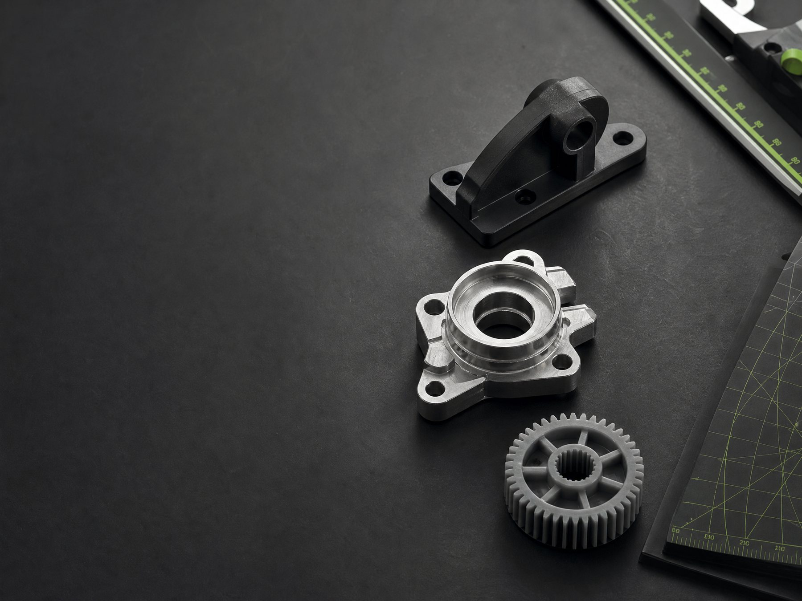

Reposição
Componentes difíceis de localizar, descontinuados ou sem fornecimento confiável.
REVERSE ENGINEERING / PRODUCT DEVELOPMENT
Reverse engineering, 3D design, prototyping and custom fabrication for parts that no longer exist, no longer fit, or need to work better.
Quem somos
A Reverso Works atua na interseção entre engenharia reversa, desenvolvimento de produto e fabricação digital. Cada projeto começa pelo entendimento da aplicação — não apenas pela cópia de uma forma.
Trabalhamos com reposição, recuperação, adaptação e desenvolvimento de componentes. Quando uma peça é difícil de encontrar, saiu de linha ou precisa ser personalizada, estruturamos um novo caminho para ela.
Precisão não é um acabamento. É uma decisão tomada desde a primeira medida.
O desafio
Componentes difíceis de localizar, descontinuados ou sem fornecimento confiável.
Peças danificadas que precisam voltar à operação com uma nova solução técnica.
Geometrias, encaixes e interfaces que precisam atender uma aplicação específica.
Ideias e necessidades que ainda não existem como um componente fabricável.
O que fazemos
Unimos leitura técnica, modelagem, escolha de materiais e produção para avançar com segurança entre a demanda e a solução.
Ver fluxo de trabalhoAnálise de peças e componentes para reconstrução de geometrias e funções.
Captura dimensional e leitura de referência para criar uma base técnica confiável.
Reconstrução digital, revisão de detalhes e desenvolvimento de geometrias editáveis.
Decisões orientadas por aplicação, carga, ambiente e requisitos de uso.
Impressão 3D, fabricação de reposição, pós-processamento e controle de qualidade.
Registro de código e revisão para reproduzir soluções aprovadas com consistência.
Como funciona
O trabalho avança de forma rastreável: entendemos o contexto, avaliamos a peça, validamos a proposta e só então produzimos.
Você apresenta o problema, a aplicação e os requisitos conhecidos.
A peça é medida ou escaneada, e as premissas técnicas são levantadas.
A geometria é desenvolvida em CAD e revisada para a função pretendida.
Escopo, material, riscos, orçamento e condições de fabricação são alinhados.
A solução segue para fabricação, controle de qualidade e entrega.

VISUAL CONCEITUAL · NÃO REPRESENTA PROJETO DE CLIENTE
Portfólio
O portfólio da Reverso Works será formado por projetos autorizados e fichas técnicas reais. Cada caso poderá registrar o ponto de partida, a análise, a revisão aplicada, a fabricação e o resultado entregue.
Levar um projeto para análiseDuas linhas
Engenharia, reposição e fabricação personalizada para quem precisa recuperar, adaptar, reproduzir ou desenvolver uma peça.
Produtos autorais e itens para venda direta, combinando design, fabricação digital e produção sob demanda.
Controle e rastreabilidade
Para projetos em acompanhamento, a Reverso Works pode organizar informações de cliente, pedido, peça, revisão, análise, orçamento, fabricação, consumo de material, controle de qualidade, entrega e faturamento.
Essa estrutura permite recuperar o histórico de uma solução e reproduzir peças aprovadas de forma controlada.
Aplicações
Componentes para manter equipamentos, produtos e conjuntos em operação.
Peças ajustadas a medidas, interfaces e condições de uso específicas.
Modelos físicos para avaliar forma, encaixe, função e evolução de uma ideia.
Itens da Reverso Studio criados para uso real e produção sob demanda.
Compromisso com qualidade
Não tratamos qualquer reprodução como equivalente a uma peça original ou apropriada para qualquer condição. Projetos críticos dependem de análise de engenharia, confirmação de requisitos, testes e aprovação antes da fabricação definitiva.
Vamos conversar
Apresente seu problema. Nós analisamos, desenvolvemos e transformamos a solução em uma peça real.
contato@reversoworks.com